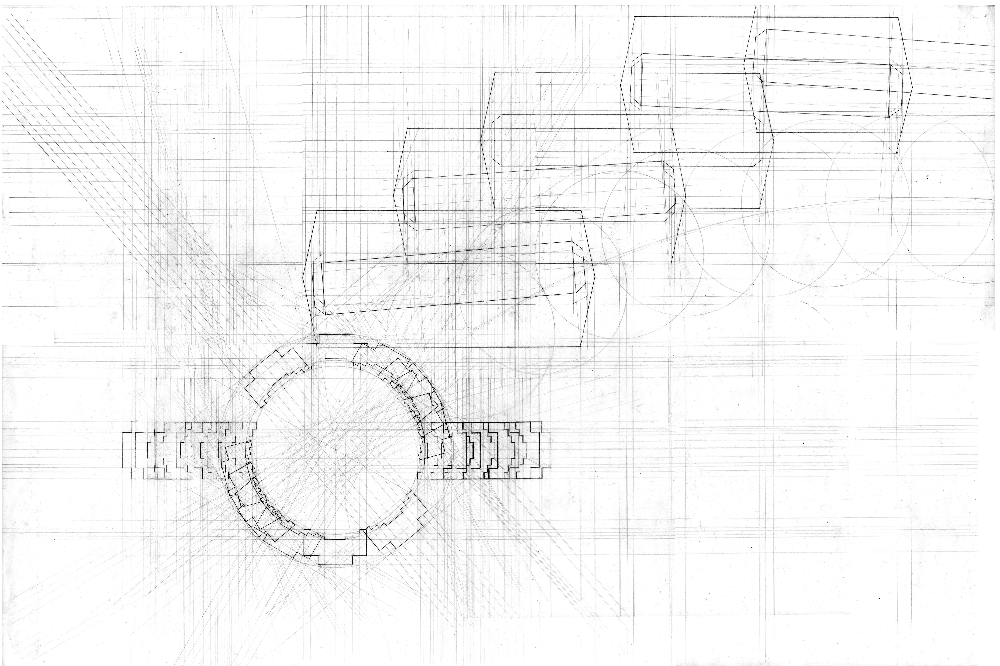
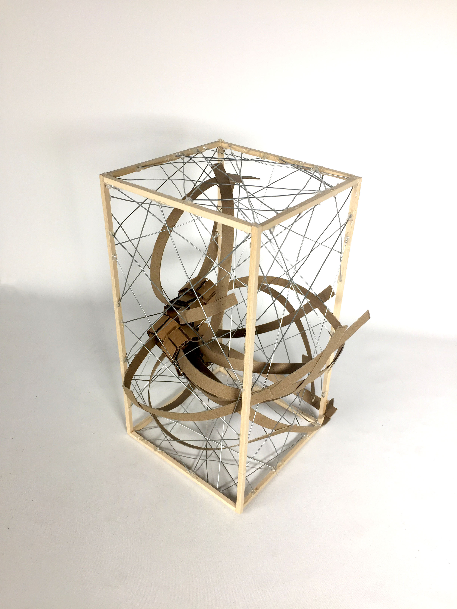
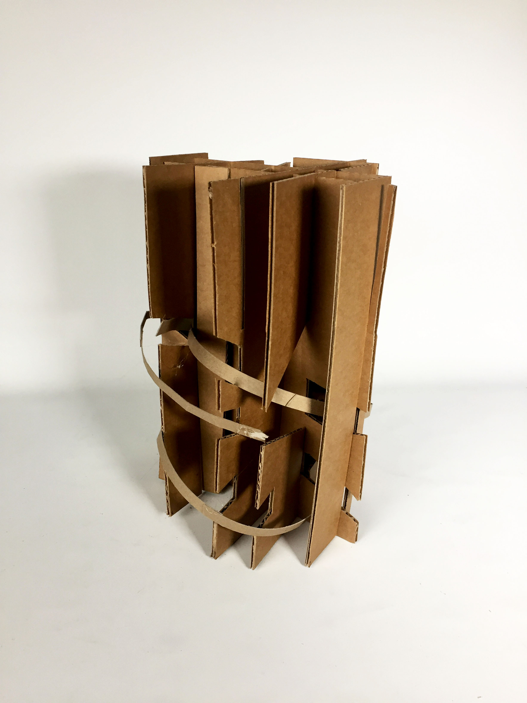
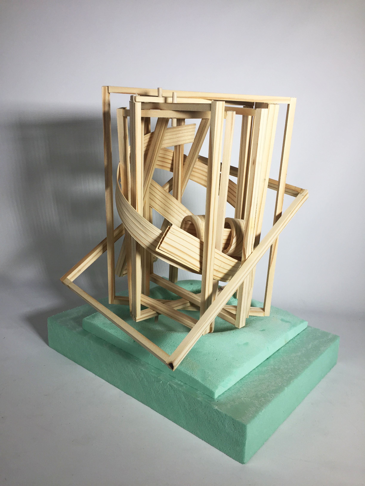
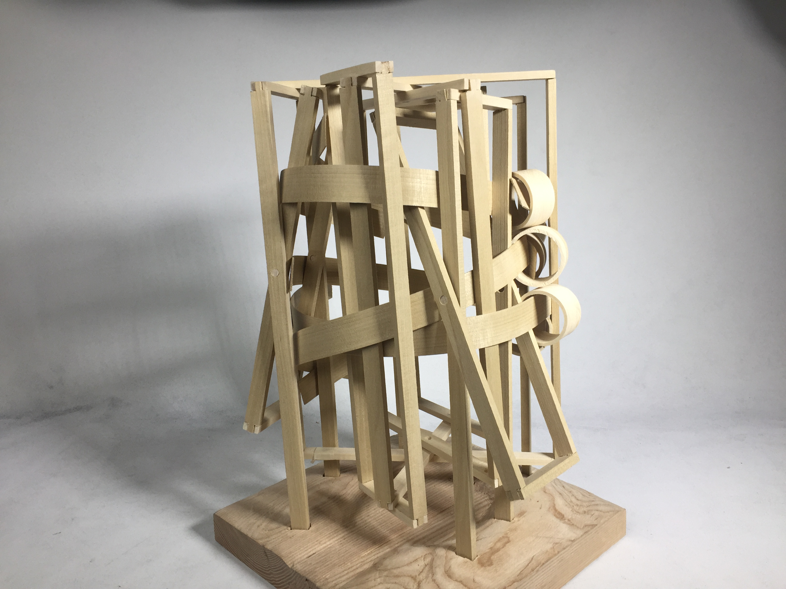
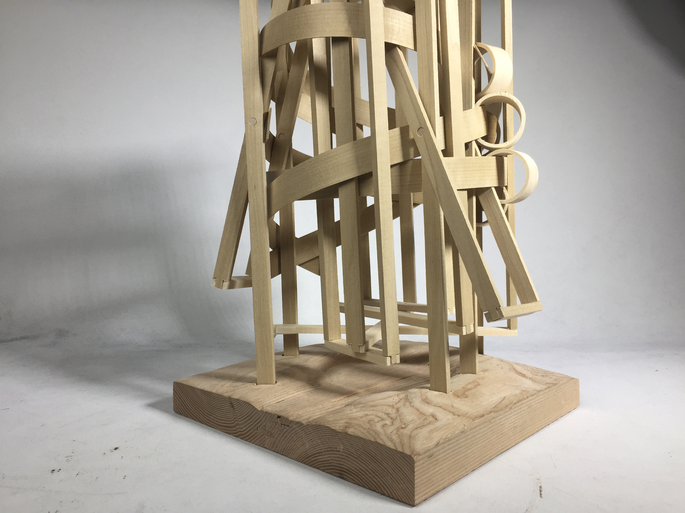

WHAT: WOODEN SCULPTURE WHEN: FEBRUARY - MARCH 2017
PARTNER: ALEX WANG PROFESSORS: KAI GUTSCHOW, ANNIE RANTTILA, LUCAS BARTOSIEWICZ, CRAIG GRETCHEN
A sculpture that captures the motion of two commonplace objects- a jar opener and melon baller through the exploration of wooden tectonics. It encompasses the scooping effect of the melon baller with the twisting motion of the jar opener.

01 DRAFTED DRAWING OF A JAR OPENER

02 DRAFTED DRAWING OF THE MOTION OF A JAR OPENER



03 PROCESS MODELS COMBININING JAR OPENER AND MELON BALLER
The bands represent the scooping motion of using a melon baller, and the planar component represents the rotation of the jar opener.

04 FINAL MODEL

05 FINAL MODEL
The final structure is a codependent system in which the bands hold the frames in place, and the frames hold the bands in place. If you remove the bands, the frames become very, but with the bands, it is very sturdy. The dowels allow for rotation, but the bands are weaved such that they stay stationary. The rings are introduced as a connection point between two bands.
The base changes in altitude to correspond to the more dense parts of the model above. Where the rings sit and bands meet, the base would be higher.
The base changes in altitude to correspond to the more dense parts of the model above. Where the rings sit and bands meet, the base would be higher.